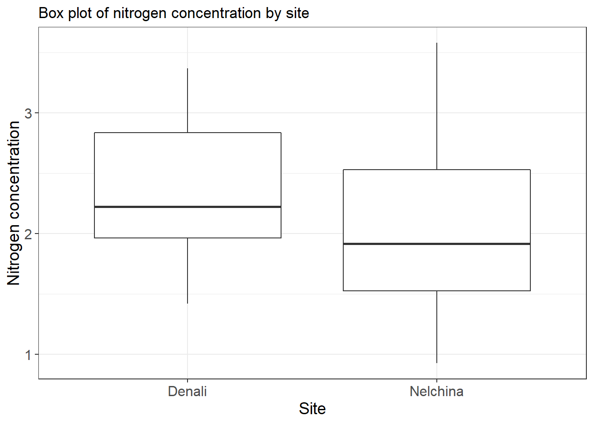
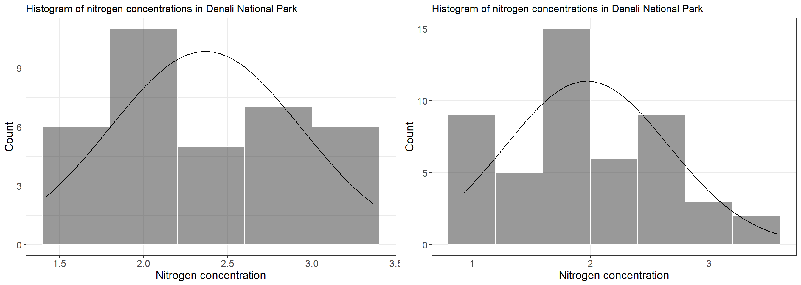
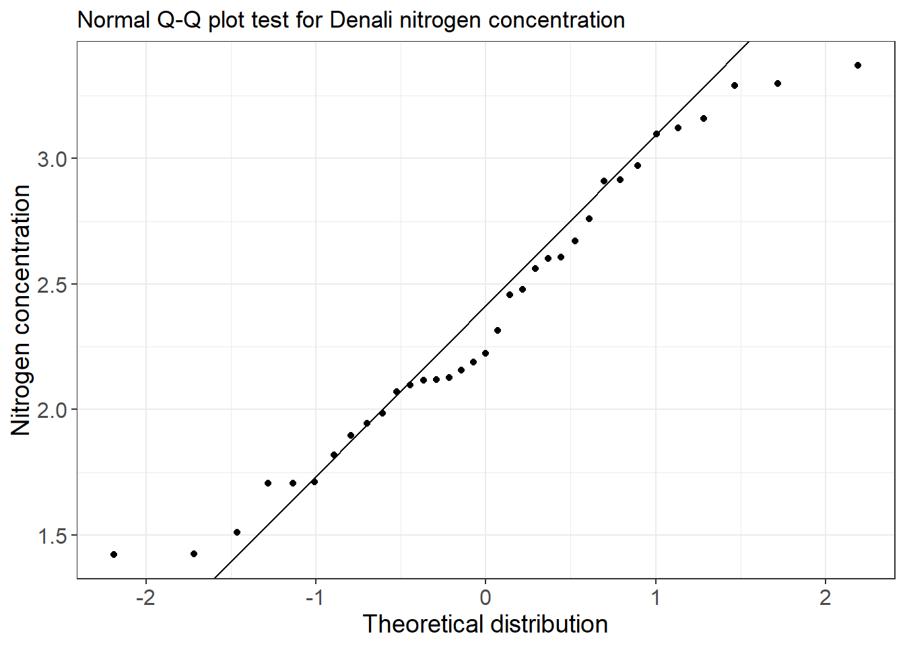
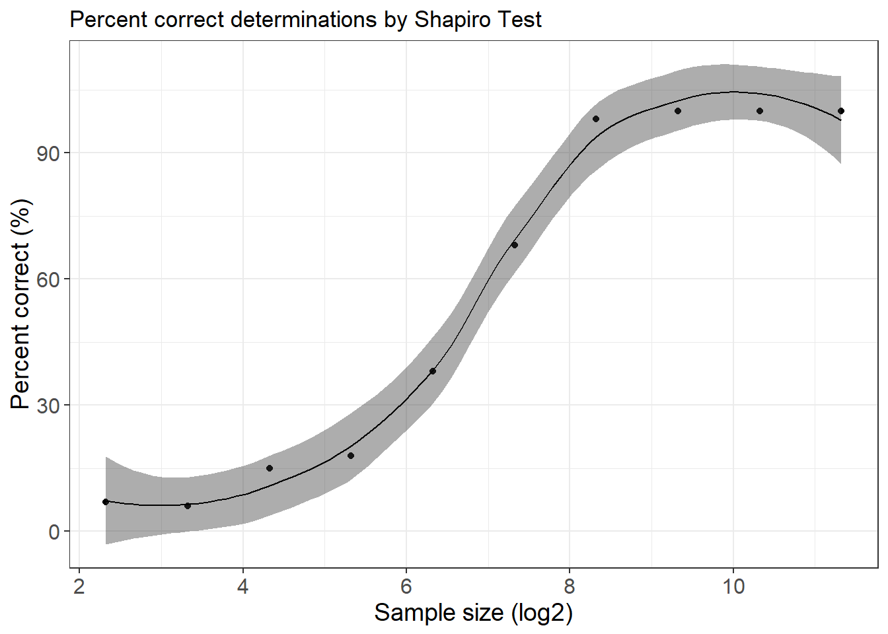

# -*- coding: utf-8 -*-
# ---------------------------------------------------------------------------
# R Assignment 3: Data Summary
# Author: Timm Nawrocki
# Created on: 2018-10-13
# Usage: Code is intended to be executed as an R markdown in RStudio.
# Description: "BIOL-A601 R Assignment 3" includes examples for normal and non-normal distributions.
# ---------------------------------------------------------------------------The set up code installs libraries used in this assignment if any are not already installed. Sets a working file based on user input.
# Install required libraries if they are not already installed
Required_Packages <- c("dplyr", "ggplot2", "ggpmisc", "readxl", "tidyr", "pander", "gridExtra")
New_Packages <- Required_Packages[!(Required_Packages %in% installed.packages()[,"Package"])]
if (length(New_Packages) > 0) {
install.packages(New_Packages)
}
# Import required libraries
library(dplyr)##
## Attaching package: 'dplyr'## The following objects are masked from 'package:stats':
##
## filter, lag## The following objects are masked from 'package:base':
##
## intersect, setdiff, setequal, unionlibrary(ggplot2)
library(ggpmisc)## For news about 'ggpmisc', please, see https://www.r4photobiology.info/## For on-line documentation see https://docs.r4photobiology.info/ggpmisc/library(readxl)
library(tidyr)
library(pander)
library(gridExtra)##
## Attaching package: 'gridExtra'## The following object is masked from 'package:dplyr':
##
## combine# Select input files
protein_file = file.choose()# Define a function to generate standardized histograms
histogram = function(inData, variable, interval, range, title, x_label, y_label) {
font_size = theme(axis.title = element_text(size=14), axis.text = element_text(size = 12))
normalDist = function(x, mean, sd, n, interval) {
dnorm(x = x, mean = mean, sd = sd) * n * interval
}
plot = ggplot(data=inData, aes(variable)) +
theme_bw() +
geom_histogram(aes(y=..count..),
breaks=seq(range[1], range[2], by = interval),
colour = 'white',
fill = 'grey20',
alpha = 0.5) +
stat_function(fun = normalDist,
args = c(mean = mean(variable),
sd = sd(variable),
n = length(variable),
interval = interval)) +
labs(title=title) +
labs(x=x_label, y=y_label) +
font_size
return(plot)
}
# Define a function to generate standardized box plots
box_plot = function(inData, X, y, title, x_label, y_label) {
font_size = theme(axis.title = element_text(size=14), axis.text = element_text(size = 12))
ggplot(data=inData, aes(X, y)) +
geom_boxplot() +
theme_bw() +
labs(title=title) +
labs(x=x_label, y=y_label) +
font_size
}
# Define a function to generate qq plots
qq_plot = function(inData, variable, title, x_label, y_label) {
font_size = theme(axis.title = element_text(size=14), axis.text = element_text(size = 12))
y = quantile(variable, c(0.25, 0.75), type=5)
x = qnorm(c(0.25, 0.75))
slope = diff(y) / diff(x)
int = y[1] - slope * x[1]
ggplot() + aes(sample=variable) +
stat_qq(distribution=qnorm) +
geom_abline(intercept=int, slope=slope) +
theme_bw() +
labs(title=title) +
labs(x=x_label, y=y_label) +
font_size
}
# Define a function to report 95% confidence interval lower and upper bounds
confidence = function(mean, sd, n) {
error = qt(0.975, df=sample_n-1) * sample_sd / sqrt(sample_n)
upper = mean + error
lower = mean - error
return(c(upper, lower))
}# Create data frame from Salix pulchra protein csv file
protein = read.csv(protein_file, header=TRUE, stringsAsFactors=FALSE)
protein$Site = recode(protein$Site, DNP = "Denali", NSA = "Nelchina")
# Summarize protein data by site
mean_site = protein %>%
group_by(Site) %>%
summarize(num_obs= n(),
mean_n = signif(mean(Nconc), digits=3),
sd_n = signif(sd(Nconc), digits=3),
round(sd(Nconc)/mean(Nconc)*100, digits=1))
# Create human readable column names for table display
colnames(mean_site)[1] = 'Site'
colnames(mean_site)[2] = 'Number'
colnames(mean_site)[3] = 'Mean nitrogen conc.'
colnames(mean_site)[4] = 'Std dev nitrogen conc.'
colnames(mean_site)[5] = 'Coeficient of variation (%)'
# Create output table
mean_site| Site | Number | Mean nitrogen conc. | Std dev nitrogen conc. | Coeficient of variation (%) |
|---|---|---|---|---|
| Denali | 35 | 2.37 | 0.567 | 24.0 |
| Nelchina | 49 | 1.97 | 0.688 | 34.9 |
# Create a box plot for nitrogen concentration by site
protein_boxplot = box_plot(protein,
protein$Site,
protein$Nconc,
"Box plot of nitrogen concentration by site",
"Site",
"Nitrogen concentration")
protein_boxplot
# Subset the protein data to include only observations for Denali
denali_protein = subset(protein, Site=='Denali')
# Create a histogram plot for nitrogen concentration for Denali
denali_histogram = histogram(denali_protein,
denali_protein$Nconc,
0.4,
c(1.4, 3.4),
"Histogram of nitrogen concentrations in Denali National Park",
"Nitrogen concentration",
"Count")
# Subset the protein data to include only observations for Nelchina
nelchina_protein = subset(protein, Site=='Nelchina')
# Create a histogram plot for nitrogen concentration for Nelchina
nelchina_histogram = histogram(nelchina_protein,
nelchina_protein$Nconc,
0.4,
c(0.8, 3.6),
"Histogram of nitrogen concentrations in Denali National Park",
"Nitrogen concentration",
"Count")
plot_grid = grid.arrange(denali_histogram, nelchina_histogram, nrow=1)
# Run a Shapiro-Wilk test on the Denali nitrogen concentrations
denali_shapiro = shapiro.test(denali_protein$Nconc)
# Create a qq plot for the denali nitrogen concentrations
protein_qq = qq_plot(denali_protein,
denali_protein$Nconc,
"Normal Q-Q plot test for Denali nitrogen concentration",
"Theoretical distribution",
"Nitrogen concentration")
protein_qq
cat('The distribution of the Denali data is statistically indistinguishable from a normal distribution:')## The distribution of the Denali data is statistically indistinguishable from a normal distribution:denali_shapiro##
## Shapiro-Wilk normality test
##
## data: denali_protein$Nconc
## W = 0.95912, p-value = 0.2151Output a plot showing the relationship between log2(n) and percent of correct determinations by Shapiro-Wilk test with loess smoothed conditional mean and 95% confidence interval.
# Set a sample size counter
n = 5
# Create empty lists to store results
n_list = c()
percent_correct = c()
# Define a function to test a sample size 100 times and return a percent correct
shapiro_accuracy = function(n, percent_correct){
i = 1
correct_results = c()
while (i < 101) {
distribution = rbeta(n, 10, 100)
distribution_shapiro = shapiro.test(distribution)
if (distribution_shapiro[2] <= 0.05) {
result = 1
} else {
result = 0
}
correct_results = c(correct_results, result)
i = i+1
}
accuracy = mean(correct_results)
percent_correct = c(percent_correct, accuracy)
return(percent_correct)
}
# Iterate through 10 increasing sample sizes and calculate percent correct for each
while (n < 2600) {
n_list = c(n_list, n)
percent_correct = shapiro_accuracy(n, percent_correct)
n = n*2
}
# Store results to data frame
n_list = log2(n_list)
percent_correct = percent_correct*100
shapiro_results = cbind.data.frame(n_list, percent_correct)
# Plot results
font_size = theme(axis.title = element_text(size=14), axis.text = element_text(size = 12))
shapiro_plot = ggplot(data=shapiro_results, aes(x=n_list, y=percent_correct)) +
geom_point() +
geom_smooth(method='loess',
color="black",
fill="grey20",
size=0.5) +
theme_bw() +
labs(title="Percent correct determinations by Shapiro Test") +
labs(x="Sample size (log2)", y="Percent correct (%)") +
font_size
shapiro_plot
cat('Percent correct determined by 100 independent distributions per sample size.')## Percent correct determined by 100 independent distributions per sample size.